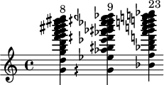

Welcome to muda’s documentation.¶
Muda is an Abjad library.
It requires Abjad 3.4 and Python 3.
The idea is to have some features to easily build scores, write and transform some music with Abjad and LilyPond. It is a little plant now that can bear some fruits in the future. It is not mute. It says, represents the way I make music, how I operate the transformations of musical material. Still, maybe it can be useful to someone else.
Start with an example if you want: muda example.
muda score¶
Score.
These are classes to build a score.
-
class
muda.score.Instrument(abjad_instrument, name, nstaffs, nvoices, lyrics_target=None)¶ Create an instrument staff
abjad.Staff().>>> import muda >>> import abjad >>> myinst = muda.Instrument( ... abjad_instrument = abjad.Piano(), ... name = "My Piano", ... nstaffs = 2, # number of staffs for the instrument ... nvoices = [2, 1], # number of voices for each staff) muda.score.Instrument() My Piano creating My Piano_Staff_1 creating My Piano_Staff_2 creating My Piano_Voice_1 creating My Piano_Voice_2 creating My Piano_Voice_3 attaching My Piano_Voice_1 to My Piano_Staff_1 attaching My Piano_Voice_2 to My Piano_Staff_1 attaching My Piano_Voice_3 to My Piano_Staff_2 >>> print(abjad.lilypond(myinst.ready_staff)) \context PianoStaff = "Piano_StaffGroup" << \context Staff = "My Piano_Staff_1" << \context Voice = "My Piano_Voice_1" { \voiceOne } \context Voice = "My Piano_Voice_2" { } >> \context Staff = "My Piano_Staff_2" << \context Voice = "My Piano_Voice_3" { } >> >>
-
class
muda.score.Score¶ Make Score.
>>> import muda >>> import abjad >>> my_score = muda.Score() muda.Score() >>> print(abjad.lilypond(my_score.score)) \context Score = "Score" << \context TimeSignatureContext = "Global_Context" { } >>
Use stylesheet to add markup names and hide or modify the time signatures (skips) staff.
-
append(context)¶ Add
muda.Instrument.ready_staffto the score.>>> my_inst = muda.Instrument( ... abjad_instrument = abjad.Piano(), ... name = "Piano", ... nstaffs = 2, ... nvoices = [2, 1],) muda.score.Instrument() Piano creating Staff: Piano_Staff_1 creating Staff: Piano_Staff_2 creating Voice: Piano_Voice_1 creating Voice: Piano_Voice_2 creating Voice: Piano_Voice_3
>>> my_score.append([my_inst]) muda.Score.append() Piano >>> print(abjad.lilypond(my_score.score) ... ) \context Score = "Score" << \context TimeSignatureContext = "Global_Context" { } \context PianoStaff = "Piano_StaffGroup" << \context Staff = "Piano_Staff_1" << \context Voice = "Piano_Voice_1" { } \context Voice = "Piano_Voice_2" { } >> \context Staff = "Piano_Staff_2" << \context Voice = "Piano_Voice_3" { } >> >> >>
-
lilypond()¶ Print
self.scorelilypond code.>>> import muda >>> my_score = muda.Score() muda.Score() >>> my_score.lilypond() \context Score = "Score" << \context TimeSignatureContext = "Global_Context" { } >> >>>
-
make_skips(time_signatures, attach=())¶ Create a “Global_Context” staff with skips and time signatures.
>>> my_score.make_skips([(4, 4), (5, 4)]) muda.Score.make_skips() >>> print(abjad.lilypond(my_score.score)) \context Score = "Score" << \context TimeSignatureContext = "Global_Context" { \time 4/4 s1 * 1 \time 5/4 s1 * 5/4 } \context PianoStaff = "Piano_StaffGroup" << \context Staff = "Piano_Staff_1" << \context Voice = "Piano_Voice_1" { } \context Voice = "Piano_Voice_2" { } >> \context Staff = "Piano_Staff_2" << \context Voice = "Piano_Voice_3" { } >> >> >>
-
rewrite_meter(time_signatures)¶ Rewrite meter according to
abjad.TimeSignatureortuplelist.>>> my_score.rewrite_meter(my_divisions) rewriting meter: Piano_Voice_1 rewriting meter: Piano_Voice_3 <Score-"Score"<<2>>>
-
show()¶ Show
self.score.
-
write_materials(materials_list)¶ Write materials to voices.
>>> material_01 = muda.Material("Piano_Voice_1") >>> material_01.silence_and_rhythm_maker( ... maker=rmakers.stack( ... rmakers.talea([1, -3, 1], 16), ... rmakers.extract_trivial(), ... rmakers.beam()), ... annotated_divisions=[ ... muda.AnnotatedDuration((1, 4)), ... muda.AnnotatedDuration((2, 4), annotation="Rest"), ... muda.AnnotatedDuration((1, 4)), ... muda.AnnotatedDuration((2, 4), annotation="Rest"), ... muda.AnnotatedDuration((3, 4)),] ... ) >>> material_01.write_pitches(["d'"])
>>> material_02 = muda.Material("Piano_Voice_3") >>> material_02.silence_and_rhythm_maker( ... maker=rmakers.stack( ... rmakers.talea([-1, 1, 1, 1], 16), ... rmakers.extract_trivial(), ... rmakers.beam(), ... ), ... annotated_divisions=[ ... muda.AnnotatedDuration((3, 8)), ... muda.AnnotatedDuration((3, 8), annotation="Rest"), ... muda.AnnotatedDuration((3, 8)), ... muda.AnnotatedDuration((3, 8), annotation="Rest"), ... muda.AnnotatedDuration((4, 8)), ... muda.AnnotatedDuration((3, 8)), ... muda.AnnotatedDuration((3, 8), annotation="Rest"), ... muda.AnnotatedDuration((4, 8)), ... ] ... )
>>> material_list = [material_01, material_02] >>> my_score.write_materials(material_list) >>> my_score.rewrite_meter(my_divisions) rewriting meter: Piano_Voice_1 rewriting meter: Piano_Voice_3 <Score-"Score"<<2>>> >>> print(abjad.lilypond(my_score.score)) \context Score = "Score" << \context TimeSignatureContext = "Global_Context" { \time 4/4 s1 * 1 \time 5/4 s1 * 5/4 } \context PianoStaff = "Piano_StaffGroup" << \context Staff = "Piano_Staff_1" << \context Voice = "Piano_Voice_1" { d'16 r8. r4 r4 d'16 r8. r2 d'16 r8. d'16 d'16 r8 r16 d'16 d'16 r16 } \context Voice = "Piano_Voice_2" { } >> \context Staff = "Piano_Staff_2" << \context Voice = "Piano_Voice_3" { r16 c'16 c'16 c'16 r16 c'16 r8 r4 r16 c'16 c'16 c'16 r16 c'16 r4. r16 c'16 c'16 c'16 r16 c'16 c'16 c'16 r16 c'16 c'16 c'16 r16 c'16 r4. r16 c'16 c'16 c'16 r16 c'16 c'16 c'16 } >> >> >>
![\version "2.20.0"
\context Score = "Score"
<<
\context TimeSignatureContext = "Global_Context"
{
\time 4/4
s1 * 1
\time 5/4
s1 * 5/4
}
\context PianoStaff = "Piano_StaffGroup"
<<
\context Staff = "Piano_Staff_1"
<<
\context Voice = "Piano_Voice_1"
{
d'16
r8.
r4
r4
d'16
r8.
r2
d'16
r8.
d'16
d'16
r8
r16
d'16
d'16
r16
}
\context Voice = "Piano_Voice_2"
{
}
>>
\context Staff = "Piano_Staff_2"
<<
\context Voice = "Piano_Voice_3"
{
r16
c'16
c'16
c'16
r16
c'16
r8
r4
r16
c'16
c'16
c'16
r16
c'16
r4.
r16
c'16
c'16
c'16
r16
c'16
c'16
c'16
r16
c'16
c'16
c'16
r16
c'16
r4.
r16
c'16
c'16
c'16
r16
c'16
c'16
c'16
}
>>
>>
>>](./_lilypond/0fba979a40aa7e83ac4f8be3d845e763d0df4243/music.png)
-
muda material¶
Todo.
Todo.
-
class
muda.material.Lyrics(target)¶ Todo.
-
write_lyrics(lyrics)¶ Write lyrics atribute to a
muda.Lyricsinstance.
-
-
class
muda.material.Material(name)¶ Todo.
-
alternating_materials(annotated_divisions, *makers)¶ Todo.
-
attach(material_name, argument, leaf, pitched=False)¶ Todo.
-
change(material_name, selection, change)¶ Todo.
-
delete(leaves, material_name=None, replace_with_rests=False, replace_with_skips=False)¶ Delete leaves by index.
-
delete_material_leaves(material_name, leaves)¶ Todo.
-
get_container()¶ Todo.
-
note_heads(material_name, argument)¶ Todo.
-
retrograde(material_name)¶ Todo.
-
see_leaves_number(pitched=True)¶ Todo.
-
silence_and_rhythm_maker(maker, annotated_divisions, *commands)¶ Todo.
-
write(lilypond_string)¶ Todo.
-
write_indicators(material_name=None, dynamics={}, articulations=[], slur_up=[], slur_down=[], literal_indicators=[], literal_leaves=[], change_staffs_names={}, attach=(), pitched=True)¶ Todo.
-
write_lyrics(lyrics)¶ Todo.
-
write_pitches(pitches)¶ Todo.
-
write_pitches_by_duration(annotated_pitches, annotated_durations)¶ Todo.
-
muda timespan¶
Todo.
Todo.
-
class
muda.timespan.TimespanList(items=None, item_class=None, keep_sorted=False)¶ Add fuctions to abjad original TimespanList.
-
annotated_durations(subdivision=(2, 4))¶ Todo.
-
durations_dict(subdivision=(2, 4))¶ Todo.
-
opposite_timespan_list()¶ Todo.
-
separate_timespans_by_annotation()¶ Todo.
-
-
muda.timespan.alternating_timespans(n_annotations=3, alternations=[[13, 5, 3], [8, 5, 3], [5, 5, 1], [3, 8, 1], [3, 13, 2], [2, 13, 8], [2, 8, 8], [1, 3, 13]], denominator=4, annotations=['Mat_1', 'Mat_2', 'Rests'])¶ Make timespans to use with alternating materials.
muda analysis¶
Todo.
Todo.
-
class
muda.analysis.IracemaAnalysis(audioin, nharmonics, denominator, minf0=24, maxf0=4200)¶ Gets the frequencies of a spectrum and notate them.
- Atributes
- audioin: str
path to the audio file (.wav)
- nharmonics: int
number of harmonics to be analyzed
- denominator: int
denominator of duration (4 = quarter, 8 = eighth, etc.) the result is always quarter note = 60BPM
>>> import muda >>> import abjad >>> analysis = muda.IracemaAnalysis( ... audioin="cataventos31.wav", ... nharmonics=16, ... denominator=4, ... # minf0=55, ... # maxf0=588, ... ) >>> analysis.abjad_container() Container("<a,, e, a, cqs e fs a b cqs' d' e' f' fs' gqs' a'>4 <a,, e, a, cqs e fs a b cqs' d' e' f' fs' gqs' a'>4 <gqs'' dqs''' gqs''' b''' dqs'''' f'''' gqs'''' aqs'''' b'''' cs''''' dqs''''' e''''' f''''' gqf''''' gqs'''''>4 <af'' dqs''' gqs''' bqs''' dqs'''' f'''' gqs'''' aqs'''' b'''' cs''''' dqs''''' e''''' f''''' fs''''' gqs'''''>4 <a,, e, a, cqs e fs a b cqs' d' e' f' fs' gqs' a'>4 <a,, e, a, cqs e fs a b cqs' d' e' f' fs' gqs' a'>4 <a,, e, a, cqs e fs a b cqs' d' e' f' fs' gqs' a'>4 <g' d'' g'' b'' d''' f''' g''' a''' b''' cs'''' d'''' e'''' f'''' fs'''' g''''>4 <g' d'' g'' b'' d''' f''' g''' a''' b''' cs'''' d'''' e'''' f'''' fs'''' g''''>4 <gqs' ef'' af'' bqs'' ef''' fqs''' af''' bf''' bqs''' cs'''' ef'''' e'''' fqs'''' gqf'''' af''''>4 <a,, e, a, cqs e fs a b cqs' d' e' f' fs' gqs' a'>4 <a,, e, a, cqs e fs a b cqs' d' e' f' fs' gqs' a'>4 <af'' ef''' af''' bqs''' ef'''' f'''' af'''' bf'''' bqs'''' cs''''' ef''''' e''''' fqs''''' gqf''''' af'''''>4 <a,, e, a, cqs e fs a b cqs' d' e' f' fs' gqs' a'>4 <b'' fs''' b''' ef'''' fs'''' a'''' b'''' cs''''' ef''''' f''''' fs''''' af''''' a''''' bf''''' b'''''>4 <b'' fs''' b''' ef'''' fs'''' a'''' b'''' cs''''' ef''''' eqs''''' fs''''' gqs''''' a''''' bf''''' b'''''>4 <bqf'' f''' bf''' d'''' fqs'''' af'''' bqf'''' cqs''''' d''''' e''''' fqs''''' g''''' af''''' a''''' bqf'''''>4 <bqf'' fqs''' bqf''' d'''' fqs'''' af'''' bqf'''' cqs''''' d''''' e''''' fqs''''' g''''' af''''' a''''' bqf'''''>4 <bf'' f''' bf''' d'''' f'''' af'''' bf'''' c''''' d''''' e''''' f''''' g''''' af''''' a''''' bf'''''>4 <a,, e, a, cqs e fs a b cqs' d' e' f' fs' gqs' a'>4 <a,, e, a, cqs e fs a b cqs' d' e' f' fs' gqs' a'>4 <gqs'' dqs''' gqs''' b''' dqs'''' f'''' gqs'''' aqs'''' b'''' cs''''' dqs''''' e''''' f''''' gqf''''' gqs'''''>4 <a,, e, a, cqs e fs a b cqs' d' e' f' fs' gqs' a'>4 <bf' f'' bf'' d''' f''' af''' bf''' c'''' d'''' e'''' f'''' g'''' af'''' a'''' bf''''>4 <a,, e, a, cqs e fs a b cqs' d' e' f' fs' gqs' a'>4 <bf' f'' bf'' d''' f''' af''' bf''' c'''' d'''' e'''' f'''' g'''' af'''' a'''' bf''''>4 <a,, e, a, cqs e fs a b cqs' d' e' f' fs' gqs' a'>4") >>> analysis.select_chords([8, 9, 23]) >>> analysis.in_hertz() Saved in chords_in_hertz.txt [[398.3642578125, 597.54638671875, 796.728515625, 995.91064453125, 1195.0927734375, 1394.27490234375, 1593.45703125, 1792.63916015625, 1991.8212890625, 2191.00341796875, 2390.185546875, 2589.36767578125, 2788.5498046875, 2987.73193359375, 3186.9140625], [403.74755859375, 613.6962890625, 818.26171875, 1022.8271484375, 1227.392578125, 1431.9580078125, 1636.5234375, 1841.0888671875, 2045.654296875, 2250.2197265625, 2449.40185546875, 2659.3505859375, 2863.916015625, 3068.4814453125, 3273.046875], [473.73046875, 710.595703125, 947.4609375, 1184.326171875, 1415.80810546875, 1652.67333984375, 1894.921875, 2131.787109375, 2368.65234375, 2605.517578125, 2842.3828125, 3079.248046875, 3316.11328125, 3552.978515625, 3789.84375]] >>> abjad.show(analysis.container)

-
abjad_container()¶ Return the container
abjad.Container()with the result.
-
assign_to_instruments(inst_names, inst_noten)¶ Distribute analyzed pitches to different instruments.
inst_noten: number of pitches assigned for each specified instrument (inst_names), for each chord analyzed.
Save the result in a .json file.
-
in_hertz()¶ Get list of chords in hertz and save as .txt file.
-
pitch_range_filter(pitch_range)¶ Todo.
-
plot_spectrogram()¶ Todo.
-
select_chords(chords_list)¶ Todo.
muda example¶
Rewriting Aperghis Recitación 9.
>>> import abjad
>>> import muda
>>> from abjadext import rmakers
COMPONENTS (timespans, rhythms, pitches)
Timespans
First, I create the timespans using muda.timespan.alternating_timespans.
The timespans will be filled with different materials.
Each column in the list below refers to a material. The number represents the material presence (duration).
>>> alternations = [
... # mat00, mat01, mat02, ..., mat11
... [0, 0, 0, 0, 0, 0, 0, 0, 0, 0, 0, 1],
... [0, 0, 0, 0, 0, 0, 0, 0, 0, 0, 0, 2],
... [0, 0, 0, 0, 0, 0, 0, 0, 0, 0, 1, 2],
... [0, 0, 0, 0, 0, 0, 0, 0, 0, 2, 1, 2],
... [0, 0, 0, 0, 0, 0, 0, 0, 4, 2, 1, 2],
... [0, 0, 0, 0, 0, 0, 0, 4, 4, 2, 1, 2],
... [0, 0, 0, 0, 0, 0, 2, 4, 4, 2, 1, 2],
... [0, 0, 0, 0, 0, 7, 2, 4, 4, 2, 1, 2],
... [0, 0, 0, 0, 2, 7, 2, 4, 4, 2, 1, 2],
... [0, 0, 0, 0, 3, 7, 2, 4, 4, 2, 1, 2],
... [0, 0, 0, 0, 4, 7, 2, 4, 4, 2, 1, 2],
... [0, 0, 0, 0, 4, 7, 2, 4, 4, 2, 1, 2],
... [0, 0, 0, 0, 4, 7, 2, 4, 4, 2, 1, 2],
... [0, 0, 0, 1, 4, 7, 2, 4, 4, 2, 1, 2],
... [0, 0, 0, 5, 4, 7, 2, 4, 4, 2, 1, 2],
... [0, 0, 0, 5, 4, 7, 2, 4, 4, 2, 1, 2],
... [0, 0, 0, 5, 4, 7, 2, 4, 4, 2, 1, 2],
... [0, 0, 1, 5, 4, 7, 2, 4, 4, 2, 1, 2],
... [4, 1, 1, 5, 4, 7, 2, 4, 4, 2, 1, 2]]
Annotations are names for each material (column) in the list above:
>>> annotations = [
... "mat00", "mat01", "mat02", "mat03", "mat04", "mat05", "mat06",
... "mat07", "mat08", "mat09", "mat10", "mat11"]
>>> timespans = muda.timespan.alternating_timespans(
... n_annotations=12,
... alternations=alternations,
... denominator=8,
... annotations=annotations)
The variable timespans is now a list of timespans
that are associated with different materials.
Then I transform it in a list of durations using the method
annotated_durations().
It becomes a list of muda.AnnotatedDuration
where each one is annotated with the material name.
>>> durations = timespans.annotated_durations(
... subdivision=(2, 4) # divide long durations
... )
Pitch and rhythm are associated with different materials through python dictionaries.
These will be the rhythms for each material:
>>> makers = {
... "mat11": rmakers.stack(
... rmakers.talea([2, 1, -1], 16),
... rmakers.extract_trivial()),
... "mat10": rmakers.stack(
... rmakers.talea([1, 1, 1, 1, 1], 32, extra_counts=[1]),
... rmakers.extract_trivial()),
... "mat09": rmakers.stack(
... rmakers.talea([-1, 1, -1], 8, extra_counts=[1]),
... rmakers.extract_trivial()),
... "mat08": rmakers.stack(
... rmakers.talea([1, 1, 1], 4, extra_counts=[1]),
... rmakers.extract_trivial()),
... "mat07": rmakers.stack(
... rmakers.talea([-3, -2, 1, -3, -3], 16, extra_counts=[4]),
... rmakers.extract_trivial()),
... "mat06": rmakers.stack(
... rmakers.talea([-2, 1, 1, 1, 1, 1, 1], 32),
... rmakers.extract_trivial()),
... "mat05": rmakers.stack(
... rmakers.talea([1, 4, 2], 8),
... rmakers.extract_trivial()),
... "mat04": rmakers.stack(
... rmakers.talea([-4, 2, 1, 1, -1, 1, 1, -1, 2, 1, 1], 32),
... rmakers.extract_trivial()),
... "mat03": rmakers.stack(
... rmakers.talea([2, -1, 2, 2, 2, -2, 2, -2], 16, extra_counts=[5]),
... rmakers.extract_trivial()),
... "mat02": rmakers.stack(
... rmakers.talea([-1, 1, 1, -1], 32),
... rmakers.extract_trivial()),
... "mat01": rmakers.stack(
... rmakers.talea([2, -1], 16, extra_counts=[1]),
... rmakers.extract_trivial()),
... "mat00": rmakers.stack(
... rmakers.talea([-8, -2, 2, 1, -3], 32),
... rmakers.extract_trivial())
... }
These are the pitches for each material:
>>> pitches = {
... "mat11": abjad.PitchSegment("a' b'"),
... "mat10": abjad.PitchSegment("e''' ef'' b'' a' d'"),
... "mat09": abjad.PitchSegment("b'"),
... "mat08": abjad.PitchSegment("f'' e'' ef''"),
... "mat07": abjad.PitchSegment("b'"),
... "mat06": abjad.PitchSegment("e'' c'' e'' c'' g' b'"),
... "mat05": abjad.PitchSegment("e' e'' g''"),
... "mat04": abjad.PitchSegment("b' b' b' a' b' b' b'"),
... "mat03": abjad.PitchSegment("b'"),
... "mat02": abjad.PitchSegment("b'"),
... "mat01": abjad.PitchSegment("b'"),
... "mat00": abjad.PitchSegment("b'"),
... }
MATERIALS
muda.Material() is used to put together the declared components.
It creates an abjad.Container() that will be appended later in a voice.
The voice name must be declared when creating the muda.Material instance.
>>> mats = muda.Material("Soprano_Voice_1")
Now, I can use muda.Material() methods to write something to the
muda.Material.container.
Here, I must use alternating_materials method to manipulate that
dictionary of rhythm makers according to the annotated durations.
>>> mats.alternating_materials(
... durations,
... makers,
... )
It will generate containers named with the annotations.
>>> containers = abjad.select(mats.container).components(abjad.Container)
>>> for container in containers:
... if container.name is not None: # ignore subcontainers
... print(container.name, container)
mat11 Container("c'8", name='mat11')
mat11 Container("c'8 c'16 r16", name='mat11')
mat10 Tuplet('5:4', "c'32 c'32 c'32 c'32 c'32")
mat11 Container("c'8 c'16 r16", name='mat11')
mat09 Tuplet('3:2', "r8 c'8 r8")
mat10 Tuplet('5:4', "c'32 c'32 c'32 c'32 c'32")
mat11 Container("c'8 c'16 r16", name='mat11')
mat08 Tuplet('3:2', "c'4 c'4 c'4")
mat09 Tuplet('3:2', "r8 c'8 r8")
mat10 Tuplet('5:4', "c'32 c'32 c'32 c'32 c'32")
mat11 Container("c'8 c'16 r16", name='mat11')
mat07 Tuplet('3:2', "r8. r8 c'16 r8. r8.")
mat08 Tuplet('3:2', "c'4 c'4 c'4")
mat09 Tuplet('3:2', "r8 c'8 r8")
mat10 Tuplet('5:4', "c'32 c'32 c'32 c'32 c'32")
mat11 Container("c'8 c'16 r16", name='mat11')
mat06 Container("r16 c'32 c'32 c'32 c'32 c'32 c'32", name='mat06')
mat07 Tuplet('3:2', "r8. r8 c'16 r8. r8.")
mat08 Tuplet('3:2', "c'4 c'4 c'4")
mat09 Tuplet('3:2', "r8 c'8 r8")
mat10 Tuplet('5:4', "c'32 c'32 c'32 c'32 c'32")
mat11 Container("c'8 c'16 r16", name='mat11')
mat05 Container("c'8 c'2 c'4", name='mat05')
mat06 Container("r16 c'32 c'32 c'32 c'32 c'32 c'32", name='mat06')
mat07 Tuplet('3:2', "r8. r8 c'16 r8. r8.")
mat08 Tuplet('3:2', "c'4 c'4 c'4")
mat09 Tuplet('3:2', "r8 c'8 r8")
mat10 Tuplet('5:4', "c'32 c'32 c'32 c'32 c'32")
mat11 Container("c'8 c'16 r16", name='mat11')
mat04 Container("r8 c'16 c'32 c'32", name='mat04')
etc...
I had to write the retrograde of some rhythms because abjad
would write the material in a given duration from left to right.
However, the Aperghis’ piece expands from right to left. Below,
I use the muda.Material.retrograde() method to get it right.
>>> mats.retrograde("mat11")
>>> mats.retrograde("mat04")
>>> mats.retrograde("mat03")
>>> mats.retrograde("mat02")
>>> mats.retrograde("mat01")
>>> mats.retrograde("mat00")
Pitches will also be written according to the durations annotations.
>>> mats.write_pitches_by_duration(pitches, durations)
To change any leaf then it is necessary to know the index.
So, you can use mats.see_leaves_number(pitched=False) to see
the index upon the leaf in the score.
Here, the processe is to compile the score, see what leaf you want to change
and use its index to make this alteration.
Below, I use the delete method. It is possible to remove the leaf or to
transform it into a rest or a skip.
>>> mats.delete([181, 182, 221, 346], replace_with_rests=True)
>>> mats.delete([343, 344, 345, 391, 392, 393], replace_with_skips=True)
To delete inside a material, use the material_name argument.
>>> mats.delete([1], material_name="mat05", replace_with_skips=True)
You can attach things in a certain material like this:
>>> mats.attach("mat07", abjad.BeforeGraceContainer("b'8"), 2)
In this case, all the containers named with “mat07” will receive a grace note before the second leaf.
It is possible to attach literals:
>>> literal00 = [
... r"\override Score.BarLine.stencil = ##f",
... r"\override Staff.NoteHead.no-ledgers = ##t",
... r"\override Staff.StaffSymbol.line-count = 1",
... r"\omit Clef"]
When material_name is None, it attaches to mats.container leaves, pitched
or not.
>>> mats.attach(
... None, # material_name
... literal00, # literal
... 0) # leaf
>>> mats.attach(None, r"\break", 1)
I will attach breaks after every “mat11” containers:
>>> for leaf, leaf2 in zip(mats.container, mats.container[1:]):
... if leaf.name is not None:
... if leaf.name == "mat11" and leaf2.name != "mat11":
... abjad.attach(abjad.LilyPondLiteral(r"\break"), leaf2)
I also need to change the line count in materials 08, 09, 10, and 11.
>>> five_lines = r"\stopStaff \startStaff \revert Staff.StaffSymbol.line-count"
>>> one_line = r'\stopStaff \startStaff \override Staff.StaffSymbol.line-count = 1'
>>> mats.attach(["mat08", "mat10"], five_lines, 0)
>>> mats.attach(["mat09", "mat11"], one_line, 0)
It is easy to change the noteheads of a particular material:
>>> mats.note_heads("mat06", "#'cross")
To get arrows, I will need some more lilypond overrides.
>>> arrowdown_head = [
... r"\stemUp",
... r"\once \override Staff.Stem.X-offset = #-0.07",
... r"\once \override Staff.Stem.Y-offset = #0.3",
... r"\once \override Staff.Flag.Y-offset = #1.5",
... r"\once \override Staff.NoteHead.stencil = #ly:text-interface::print",
... r"\once \override Staff.NoteHead #'text = \markup{" +
... r" \arrow-head #Y #DOWN ##f}"]
>>> arrowup_head = [
... r"\stemNeutral",
... r"\once \override Staff.Stem.Y-offset = #-1.3",
... r"\once \override Staff.Stem.X-offset = #-0.1",
... r"\once \override Staff.NoteHead.stencil = #ly:text-interface::print",
... r"\once \override Staff.NoteHead #'text = \markup{" +
... r" \arrow-head #Y #UP ##f}"]
>>> mats.attach("mat05", arrowdown_head, 0)
>>> mats.attach("mat05", arrowup_head, -1)
I used mats.see_leaves_number(pitched=True) to get the leaves index again.
And then I attached some text to them.
>>> mats.attach(
... None,
... abjad.Markup("expirar", direction=abjad.Up),
... 59, # index
... pitched=True)
>>> mats.attach(
... None, abjad.Markup("inspirar", direction=abjad.Up), 60, pitched=True)
>>> mats.attach(
... None, abjad.Markup("(potrinaire)", direction=abjad.Up), 18, pitched=True)
>>> mats.attach(
... None, abjad.Markup("(souffle)", direction=abjad.Up), 41, pitched=True)
With write_indicators is easy to write slurs:
>>> mats.write_indicators(material_name="mat05", slur_down=[(0, 1)])
>>> mats.write_indicators(material_name="mat08", slur_up=[(0, 2)])
>>> mats.write_indicators(material_name="mat10", slur_up=[(0, 4)])
Lyrics are written in a specific class: muda.Lyrics. It requires the
target to which the lyrics will be added. Later, we put this muda.Lyrics
instance together with the materials in the score through the method
muda.Score.write_mateirals.
>>> lyrics = muda.Lyrics("Soprano_Voice_1")
>>> lyrics.write_lyrics(r'''
... sir
... dé -- sir
... _ dé -- sir
... ce _ dé -- sir
... donc __ ce _ dé -- sir
... porquoi donc __ ce _ dé -- sir
... _ _ _ _ _ _ porquoi donc __ ce _ dé -- sir
... _ _ _ _ _ _ _ porquoi donc __ ce _ dé -- sir
... je lui cède _ _ _ _ _ _ _ porquoi donc __ ce _ dé -- sir
... par -- fois je lui cède _ _ _ _ _ _ _ porquoi donc __ ce _ dé -- sir
... jé par -- fois je lui cède _ _ _ _ _ _ _ porquoi donc __ ce _ dé -- sir
... tu -- jé par -- fois je lui cède _ _ _ _ _ _ _
... porquoi donc __ ce _ dé -- sir
... san tu -- jé par -- fois je lui cède _ _ _ _ _ _ _
... porquoi donc __ ce _ dé -- sir
... vé san tu -- jé par -- fois je lui cède _ _ _ _ _ _ _
... porquoi donc __ ce _ dé -- sir
... en -- vie vé san tu -- jé par -- fois je lui cède _ _ _ _ _ _ _
... porquoi donc __ ce _ dé -- sir
... mon en -- vie vé san tu -- jé par -- fois je lui cède _ _ _ _ _ _ _
... porquoi donc __ ce _ dé -- sir
... à mon en -- vie vé san tu -- jé par -- fois je lui cède _ _ _ _ _ _ _
... porquoi donc __ ce _ dé -- sir
... ré -- siste à mon en -- vie vé san tu -- jé par -- fois je lui cède
... _ _ _ _ _ _ _ porquoi donc __ ce _ dé -- sir
... par -- fois je ré -- siste à mon en -- vie vé san tu -- jé
... par -- fois je lui cède _ _ _ _ _ _ _ porquoi donc __ ce _ dé -- sir
... ''')
Finnaly, I create a score:
>>> score = muda.Score()
muda.Score()
The instrument:
>>> inst = muda.Instrument(
... abjad_instrument=abjad.SopranoVoice(),
... name="Soprano",
... nstaffs=1,
... nvoices=[1],
... lyrics_target="Soprano_Voice_1",
... )
muda.score.Instrument() Soprano
creating Staff: Soprano_Staff_1
creating Voice: Soprano_Voice_1
creating Context: Soprano_Voice_1_Lyrics
Note that the name “Soprano_Voice_1” that I predicted when wrote the
muda.Material and muda.Lyrics is defined automatically. I just needed
to put the name “Soprano”.
Whe creating the instrument is also necessary to add the lyrics_target.
First, I append the instrument in the score:
>>> score.append([inst])
muda.Score.append() Soprano
I will need some time signatures based on my durations.
>>> time_signatures = [abjad.TimeSignature(_) for _ in durations]
make_skips will create a “Global_Context” staff with skips and time
signatures.
>>> score.make_skips(time_signatures)
muda.Score.make_skips()
write_materials() will write the materials and lyrics to the score. What
is behind the scenes is that mats.container is appended to score.score
["Soprano_Voice_1"].
>>> score.write_materials([mats, lyrics])
Rewrite meter:
>>> score.rewrite_meter(time_signatures)
rewriting meter: Soprano_Voice_1
<Score-"Score"<<2>>>
Create the lilypond file:
>>> lilypond_file = abjad.LilyPondFile(
... items=[score.score],
... )
>>> abjad.persist.as_ly(lilypond_file, "aperghis_score.ly")
('aperghis_score.ly', 0.21055388450622559)
The generated score (“aperghis_score.ly”) is included in the following lilypond file:
\version "2.20.0" %! abjad.LilyPondFile._get_format_pieces()
\language "english" %! abjad.LilyPondFile._get_format_pieces()
\include "/Users/Davi/github/muda/muda/aperghis_example/aperghis_stylesheet.ily"
\markuplist {
\right-column {
\pad-around #1
\score-lines {
\include "/Users/Davi/github/muda/muda/aperghis_example/aperghis_score.ly"
}
}
}
The sylesheet content:
\version "2.20"
\language "english"
#(set-global-staff-size 9)
\header {
tagline = ##f
% breakbefore = ##t
title = "Recitación 9"
poet = "Georges Aperghis (*1945)"
}
\layout {
ragged-right = ##t
\context {
\name TimeSignatureContext
\type Engraver_group
\numericTimeSignature
}
\context {
\Score
\numericTimeSignature
\remove Metronome_mark_engraver
\remove Bar_number_engraver
\remove Mark_engraver
\accepts TimeSignatureContext
\override BarLine.hair-thickness = #0.9
\override BarLine.thick-thickness = #8
\override Stem.thickness = #0.5
\override Staff.thickness = #0.5
\override Stem.stemlet-length = #1.15
\override TupletBracket.bracket-visibility = ##t
\override TupletBracket.minimum-length = #3
\override TupletBracket.padding = #2
\override TupletBracket.staff-padding = #2
\override TupletBracket.springs-and-rods = #ly:spanner::set-spacing-rods
\override TupletBracket.direction = #down
\override TupletNumber.font-size = #1.2
\override TupletNumber.text = #tuplet-number::calc-fraction-text
\override SpacingSpanner.strict-note-spacing = ##t
proportionalNotationDuration = #(ly:make-moment 1 28)
tupletFullLength = ##t
}
\context {
\Staff
\remove Time_signature_engraver
\remove Clef_engraver
}
}
\paper {
#(set-paper-size "b4landscape")
indent = 0
bottom-margin = 10\mm
left-margin = 50\mm
right-margin = 20\mm
top-margin = 10\mm
}
The result: